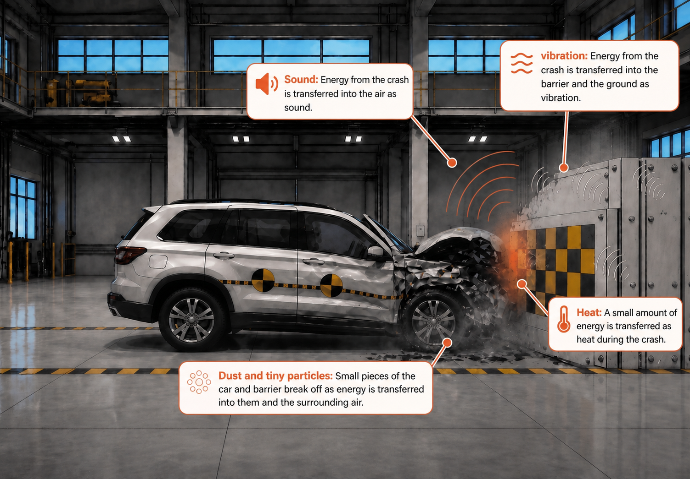

Impact Motors:
Crash Investigation
Impact Motors has completed a series of crash tests, but the results are inconsistent. The team needs a Junior Scientist to examine the evidence and explain what happened.
Your Job: Examine the crash test results and figure out what’s really happening.
Learning Objectives
- Students will analyze crash test evidence to identify patterns in motion and damage.
- Students will develop a scientific explanation describing what happens before, during, and after a crash.
- Students will construct a model to represent how energy is transferred and transformed during a collision.
- Students will use evidence from multiple test runs to support their explanation.
Standards Alignment
Arizona Science Standard:
5.P4U1.6 — Construct an explanation relating energy transfer to changes in motion.
Science and Engineering Practices:
Developing and Using Models; Constructing Explanations; Analyzing and Interpreting Data
Crosscutting Concepts:
Cause and Effect; Systems and System Models; Energy and Matter
Crash Investigation
You've just joined Impact Motors as part of a newly hired team of Junior Crash Test Scientists.
Recent crash tests have produced inconsistent results, and in some cases, passenger safety may be at risk. The engineering team has not been able to explain what is happening during these crashes.
Because of this, your team was brought in to take a closer look at the evidence from a scientific perspective and will need to figure out why this is happening.
You report directly to the Senior Safety Engineer, who has asked your team to analyze the crash data and determine what is happening during these tests.

You enter the test facility at Impact Motors. The crash analysis team has been reviewing recent test results.
You and your team meet with Molly, Impact Motors Senior Safety Engineer.

Molly continues…
Molly looks at her computer and briefly pauses.
After meeting with Molly, you review the crash test system she showed you. The results don’t all match.
Something is different between these tests, but it’s not immediately clear why.
It’s time to dig in because in order to figure out what’s going wrong, you’ll need to decide where to start looking for evidence.

Where will you start?
You can start by examining how the car moved before the crash, or what changed during the crash.
Different starting points can reveal different clues, but they all help explain what’s happening.


Record what you notice during each test run. Focus on how the car moves.
| Test Run | Status | Observation | Replayed At |
|---|
How did the motion differ between the three test runs? What patterns do you notice?

How do the changes differ between the test runs? What patterns do you notice about where the damage occurs?
Your Junior Crash Test Scientist team has now shared evidence from the first crash-test review.
Everyone investigated the same three test runs, but from different perspectives: motion before impact and changes during impact.
Now compare the evidence together. Look for patterns between the motion data and the post-impact observations.
| Test Run # | Motion Data | Post-Impact Observations | Post-Impact Image |
|---|---|---|---|
|
Test Run 1
|
Slower motion before impact | Less front-end change after impact |

|
|
Test Run 2
|
Fastest motion before impact | Most front-end change after impact | |
|
Test Run 3
|
Medium motion before impact | Moderate front-end change after impact |

|
Once your team notices a pattern, the next step is to explain what might be causing it.
The engineering team is depending on your explanation to understand what’s happening in these crashes.
Your job is not just to describe what changed in the crash tests. Your team was brought in to figure out why the results are different.
The pattern is clear: when the car moved differently before impact, the amount of change after impact also looked different.
To help explain that pattern, review the Crash Science Briefing. Look for a clue that explains why some test runs showed more change than others.
Which crash likely involved the most energy? What evidence supports your thinking?
One important safety idea is this: visible damage does not always mean the car failed. Some parts of a vehicle are designed to bend, crush, or change shape so they can absorb energy and help protect passengers.
Next, your team will investigate where the energy went during the crash and how that affects passenger safety.
Your team pauses to think about what you've discovered.
Now you have a new question to investigate. Where does the energy go during a crash?
Before the engineers can make the car safer, your team needs to explain what happens to energy during the crash, and your Junior Crash Test Scientist team now has evidence that energy plays a role in these crashes.
But you still need a way to analyze what is happening during the crash.
Your team goes to Molly, the Senior Safety Engineer, for support.
She reviews your findings and nods.
She pulls up a system on her screen.
Different choices will lead to different insights.
Where will you start your energy analysis?
Where will you start your energy analysis?
You decide to follow the energy into the car.
Molly brings up the Crash Test Analysis Tool.
You begin your analysis.
Crash Test Energy Analysis
Choose a crash test run to compare before and after impact:
| Before Impact | After Impact |
|---|---|
|
|
|
You review the results from the analysis.
Look closely at what changed between the before and after images.
What evidence do you see that energy affected the car during the crash?
You decide to follow how energy spreads into the surroundings during the crash.
Molly opens the Crash Test Analysis Tool.
You begin your analysis.
Crash Test Energy Analysis
Choose a crash test run to compare before and after impact:
| Before Impact | After Impact |
|---|---|
|
|
|
You review the results from your analysis.
Look closely at what happens around the crash.
What evidence do you see that energy moved into the surroundings?
Your Junior Crash Test Scientist team now shares what you discovered.
Some teams followed the energy into the car. Other teams followed how energy spread into the surroundings.
Now it's time to bring your evidence together.


What patterns do you notice across both investigations?
What do these results suggest about what happens to energy during a crash?
How is energy transferred in each case?
Build your explanation:
During a crash, energy is transferred into __________ and __________.
Evidence from the car shows __________.
Evidence from the surroundings shows __________.
The motion of the car matters because __________.
The engineering team is depending on your explanation to understand what's happening during these crashes.
Next, you will turn your findings into a scientific brief for the engineers at Impact Motors.
Your investigation is almost complete.
You have analyzed crash test data, looked for patterns, and investigated where energy went during the crash.
Now the engineering team needs your scientific explanation before they make changes to the vehicle design.
Molly opens a final report template on the screen.
Where does the energy go during a crash?
What evidence shows that energy affected the car?
What evidence shows that energy moved into the surroundings?
Explain how the car's motion affects the amount of energy and how that energy is transferred during the crash.
The engineering team reviews your scientific brief.
Your work helped explain what was happening during the crash tests.
As a Junior Crash Test Scientist, you did more than describe damage.
You analyzed data, identified patterns, investigated energy transfer, and communicated a scientific explanation to help solve a real engineering problem.
Mission complete.
Your export will include all journal entries, your decisions, and a timestamp. Your teacher may ask you to submit this file.